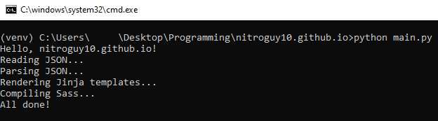
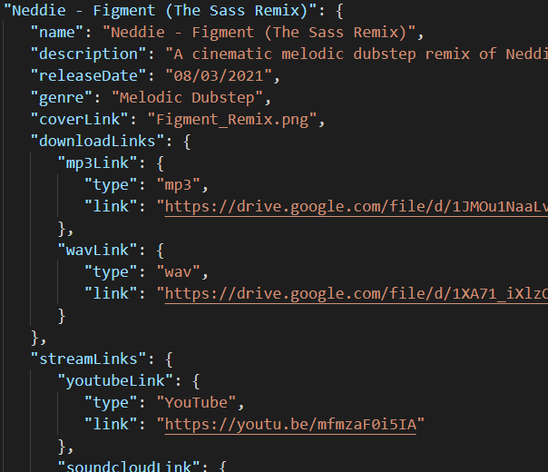
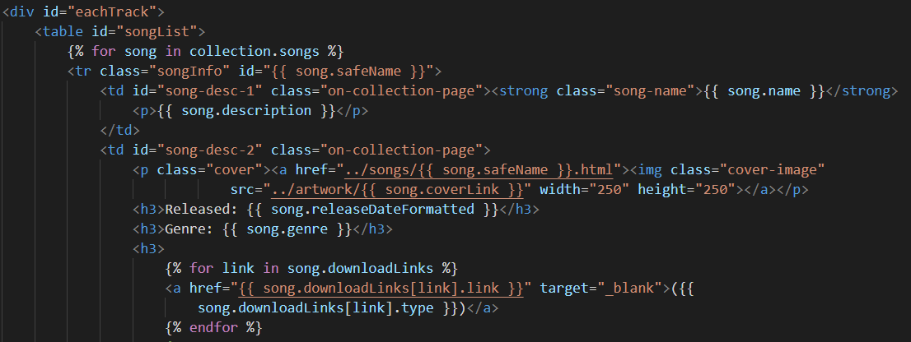
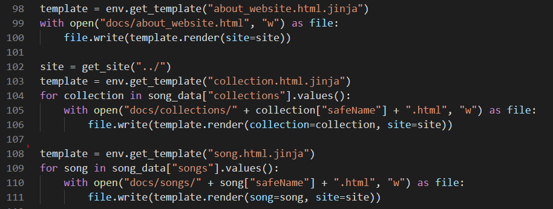
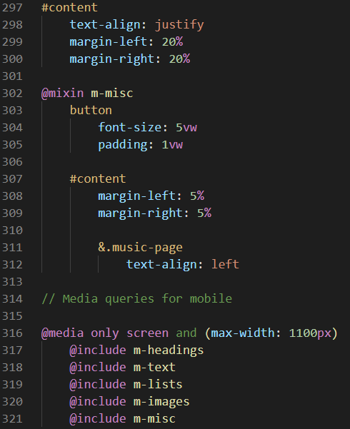

How This Website Was Made, A Story
This website has a lot of moving parts. Ok, actually it has no moving parts. It's static. Every page you load on this website is its own unchanging HTML file. There's also hardly any JavaScript—in fact there isn't ANY JavaScript on this particular page.
If you know about designing websites from scratch and what kinds of methods go with what kind of website, then this probably isn't surprising to you. Static websites are typically associated with things like blogs and my website could sort of be considered one convoluted blog. None of my site really needs to be dynamic; I mean I'm not exactly trying to make nitroguy10.github.io the new Facebook. Plus, I'm using GitHub Pages to host this (at least at the moment) and I don't even think I CAN host a non-static site at all.

What may NOT be as obvious is that this website is generated. You see, the "music" portion of my website functions as an encyclopedia of all the songs I've made. This created some unique challenges for me—things that were totally uncharted territory at the time of me creating the "music" section.
- Each song and collection had its own set of information.
- That information needed to be displayed identically across multiple pages in DIFFERENT contexts.
- Each page needed look the same. What if I decided to update the layout later on?
- It needed to be FUTURE-PROOF. What if I made a new song or collection?
My old way of dealing with this was a mess. I essentially had HTML files containing a big script that created each element of the page and filled it with the info corresponding to the given song or collection. My solution for SONG pages (or what I called "links_to" pages) was even wonkier. I used the HASH to determine what info to put on the screen. Now, this isn't even that bad ...ok it's pretty bad, but there were a few other things that just pushed it over the line of ridiculous. For one, I had to make a SEPARATE HTML file for each collection even though the contents would be exactly the same (script, remember?) just so the URLs would exist for GitHub Pages. That's already starting to go against #3 on that list I just made because I'd have to remember to update ALL those HTML files if I decided to change the layout. Even more silly is that the JSON file the pages were pulling the song data from... wasn't a JSON file. Past me couldn't figure out how the heck to get my scripts to read JSON so instead I opted to DECLARE A 2X2 ARRAY OF OBJECTS, INDEX BY INDEX, IN A JAVASCRIPT FILE........ Yeah, I'm glad I decided to change all that.
Oh yeah, all the data for my songs is stored in a single JSON file (at least NOW it is *shudders*). I'm really happy to be doing this as it not only serves as the central database from which my webpages gather their info, but it also serves as a formal record of my songs and the information about them. Otherwise, I may not remember the release date of certain songs for example, and maybe far in the future I would forget even making some of these songs without seeing them in the JSON file.
If you haven't already guessed from my tone by now, I wasn't really happy with the internal design of my website and I expressed this to my programmer friend. He suggested I use a "static site generator"—something I had never heard of. After playing around with a couple (one) of them, I realized they generally weren't made to generate webpages from data files, which was what I needed. So, I decided to create my own static site generator called tuscon. After ten-or-so days and finally using recursion for something after like 2 years, it was done. And then- wait. Is tuscon a "static site generator" or a "templating" library. Wait a minute, is TEMPLATING what I was looking for???
. . . . . . . . . . . Templating was what I was looking for.
Holy cow can your life be such a pain when you don't know the right search term for something, but I digress. Now knowing that a TEMPLATE ENGINE was what I needed, I got to work making templates for use with Jinja. This was the perfect solution for me. Each song page and collection page function exactly the same, so it made perfect sense to make ONE template for "songs" and one for "collections" and render them multiple times. I could even (finally) properly read the data from a JSON file with Python and fill in the templates using a "for-each" situation.
So that's how I arrived at this solution for my website. I "compile" the site if I decide to update something and the changes automatically cascade to all the affected files—minimal effort on my part. This also opened the door to even more Jinja-fication. I could turn this site's footer into its own template. What about the <head> tag? Template. With the JSON files, I could store not just song info, but general data for this site. What if I changed my Twitter account some day? Well, I could put all my social media links into a JSON file and fill them in with Jinja. I even did that with the tuscon link you saw earlier!
Compiling this website with a script also made using a CSS preprocessor more accessible. I don't think I'm necessarily using Sass for its intended, intended purpose nor I think I really NEED to use it, but I am anyway. Sass is certainly nicer syntactically than CSS and it's got a bunch of features that I'm not using. The "@include" thing that the above picture shows is ABSOLUTELY not the intended use for mixins, but the way I use them has actually helped make managing the media queries for the stylesheet much easier. I don't really have much else to say on the stylesheet front except that CSS is annoying and very useful and media queries are annoying and very useful.
Ok, I might have gone a little overboard but I really am very happy with the way my website is set up internally. Stylistically? Eh, I think it could use some work but it's serviceable and works for me. At the end of the day, I did what I set out to accomplish. If I release a new song, I add its info to the JSON file and the rest of the site updates accordingly. I hope you enjoyed reading about the evolution of my website! This whole experience has taught me a lot about web design and lots more about how to do web design by doing lots of not-web-design.